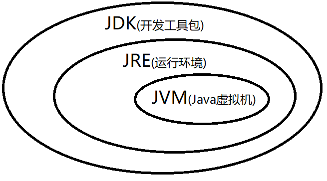
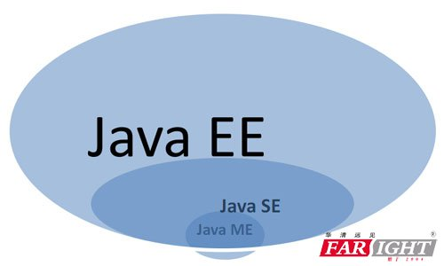
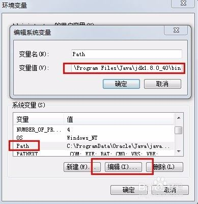

Java的名字的由来跟哪个咖啡产地有关: ( )使Java成为网络上最流行的编程语言:
 Java语言内部运行的核心, 说的是 ( ): 包含Java运行的基本类库和开发命令，可以进行完整的Java开发, 说的是 ( ): 包含Java运行的基本类库和一些运行命令，可以运行编译好的Java程序, 说的是 ( ):
 请选择: Java的标准版是 Java的企业版是 Java的微型版是 A. JavaEE B. JavaME C. avaUE D. JavaSE
 参考资料: Java环境变量设置 安装Java需要配置的环境变量包括 ( ): 配置 Java 安装路径的环境变量是 : 配置 Java 类路径的环境变量是 : , 该环境变量最简单的配置只要配置一个号就可以了 配置 Java 命令文件搜索路径的环境变量是 :
请问下那个命令是在编译 java 文件( ) 请问下那个命令是在执行 java 文件( ) Java 的代码文件的后缀是 Java 的源代码在编译后 , 产生的字节码文件的后缀是 编辑 java 文件的命令名是 : 执行字节码 class 文件的命令名是 :